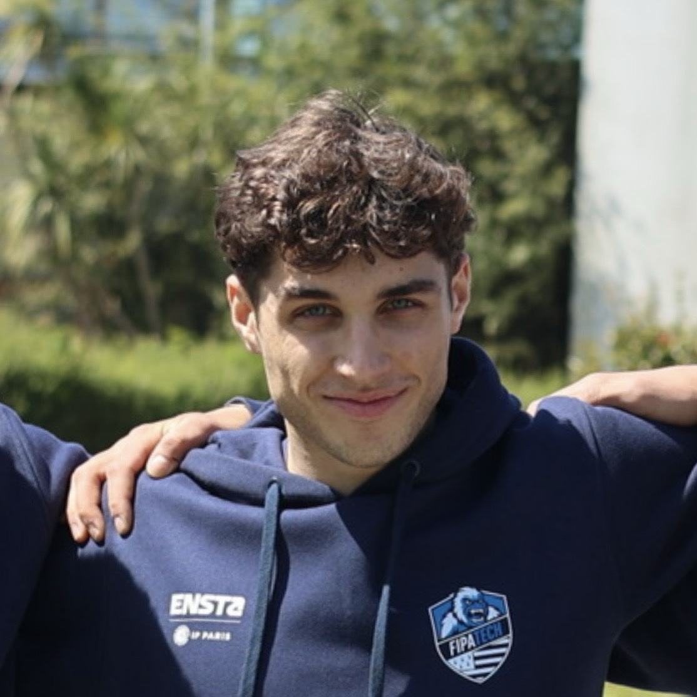

Robotics Software Engineer
Enchanted Tools · Paris, France
Develop and integrate robotics software for Mirokaï, with a focus on autonomous navigation, system integration, and validation on physical robots.

I build autonomous robots and robotics software with a focus on navigation, embedded systems, and real-world integration. I am a Robotics Software Engineer at Enchanted Tools in Paris, working on Mirokaï robots, and I am completing an MSc in Embedded Systems Engineering at ENSTA - Institut Polytechnique de Paris.
My personal and team projects explore vision-language models for social navigation, humanoid robotics, embedded systems, and autonomous competition robots.
Enchanted Tools · Paris, France
Develop and integrate robotics software for Mirokaï, with a focus on autonomous navigation, system integration, and validation on physical robots.
Enchanted Tools · Paris, France
Supported prototyping, testing, and integration for Mirokaï robots across hardware and software interfaces.
Vision-Language Models for Social Robot Navigation
Experimental ROS 2 stack exploring a local vision-language model as a high-level reasoning layer while conventional robotics remains responsible for motion. Temporal RGB observations become structured social decisions with freshness checks and hysteresis before semantic trajectory scoring and Nav2/MPPI execution. Qwen3-VL runs through vLLM on Jetson AGX Orin, with HuNavSim reactive pedestrians and a reproducible nine-scenario benchmark.
Autonomous Humanoid Research and Experimentation Platform
Co-Founder and Software & Embedded Systems Lead for a modular wheeled-biped humanoid research platform at ENSTA. The program covers ROS 2, embedded firmware and electronics, CAN architecture, state estimation, optimal control, reinforcement learning, simulation, and the transition from digital models to a physical robot.
Robot Club Toulon · Goalkeeper Robot Lead
I develop autonomous goalkeeper behaviors in C#, including stereo-camera 3D ball reconstruction, ballistic trajectory prediction, reactive positioning, and shot interception with a two-axis arm. The team finished world runner-up at RoboCup 2026 in Incheon, South Korea.
French Robotics Cup · Founder, Team Leader & Software Lead
I founded and led the team around an autonomous holonomic robot built with ROS 2, Nav2, MPPI, multi-sensor localization, and online task planning. We took the system from simulation through integration and competition, finishing 17th out of 89 teams in the Senior category in 2026.
A selection of smaller public projects and contributions that show the software and systems work behind the larger robotics projects above.
Maintainer
Curated and maintained reference to the French robotics ecosystem, covering research, industry, open source, education, communities, and events with an emphasis on active and verifiable resources.
Python compiler tooling for robot descriptions
Built a small compiler pipeline with a lexer, parser, AST, semantic analysis, lowering passes, URDF generation and validation, automated tests, and a local Three.js viewer for mobile robot models.
Generic ROS 2 audio event server
Designed a reusable ROS 2 audio event service with priorities, layers, runtime modes, status reporting, control services, pluggable playback backends, and a null backend for simulation and CI.
C++ Contributor
Contributed upstream to the lightweight PaxoPhone operating system, including a merged message-management module and fixes to storage and translation unit tests.
C++, Python, C, C#, MATLAB/Simulink, Bash
ROS / ROS 2, Nav2, MPPI, ros2_control, Gazebo, TF2
PyTorch, vLLM, OpenCV, TensorRT, YOLO, vision-language models
Linux, Docker, NVIDIA Jetson, STM32, FreeRTOS, micro-ROS, CAN
ENSTA - Institut Polytechnique de Paris
MSc in Embedded Systems Engineering, through apprenticeship · 2024 - 2027 (Expected)
University of Toulon - Institute of Technology
BSc in Electrical Engineering and Industrial Computing · 2022 - 2024
President, ENSTA Robotics Club
French - Native
English - TOEIC 875/990